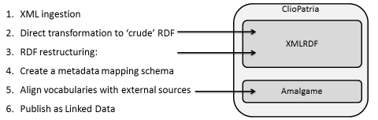

Raw data, conversion scripts and results
On this page, we list the input and intermediary results of the Amsterdam Museum conversion, as described in the ESWC 2012-submitted paper "Supporting Linked Data Production for Cultural Heritage institutes: The Amsterdam Museum Case Study". The steps we refer to are listed in the figure below:

Step 1: XML ingestion files
The XML consists of multiple XML parts: The collection metadata was provided in 73 files each of 1000 records. The download files can be found at
the VUA Eculture GIT server.
The concept thesaurus and person authority file were provided as separate XML files and can be downloaded directly from the GIT server: [
people.xml(10.2 MB) and
thesaurus.xml (9.3 MB)
Step 2 and 3: XMLRDF files
Step 2 and 3: Converted RDF
We here list pointers to the individual converted turtle files. The files are hosted on the
Eculture Git server
Step 4: Create metadata schema mapping
Below, we list the schema mapping RDF files that map the Amsterdam Museum classes and properties to EDM classes and properties (DCterms, SKOS, RDA Group 2 Elements and a few EDM-specific classes and properties)
Step 5: Align vocabularies
The Amalgame alignment strategy used is
detailed here. Below we list the mapping files that are the result of this strategy.
Step 6: Publish as LOD
The converted, schema-mapped and aligned Amsterdam Museum Linked Open DAta is
registered at CKAN. There, you can find example URIs, the link to the server and the SPARQL endpoint.